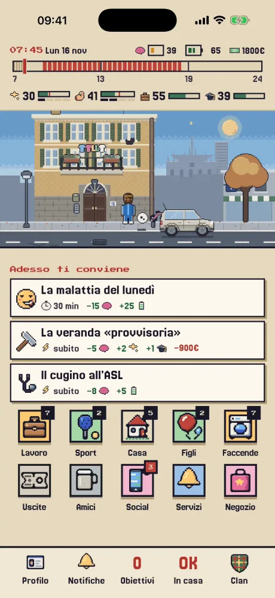
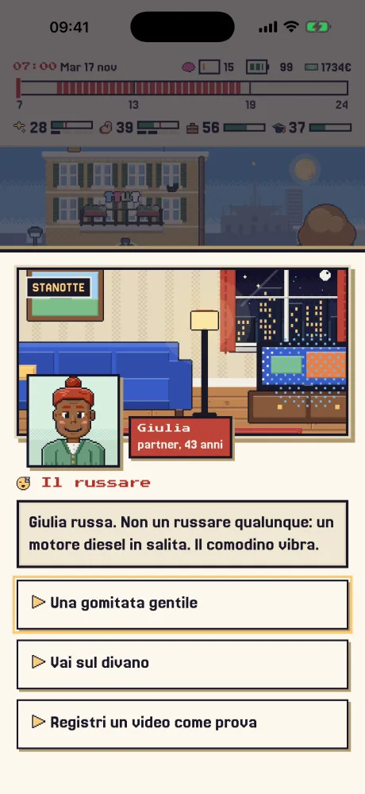
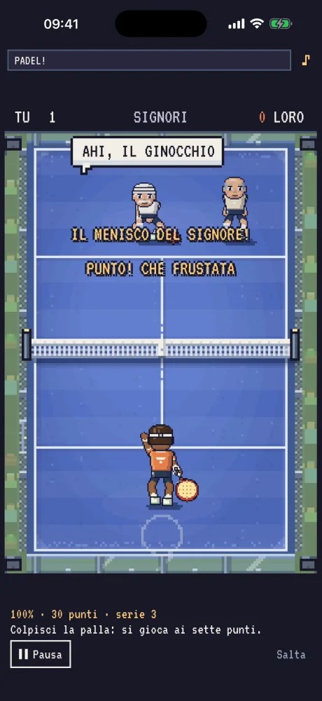
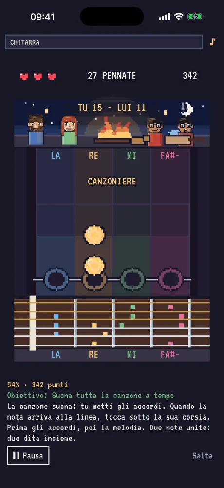
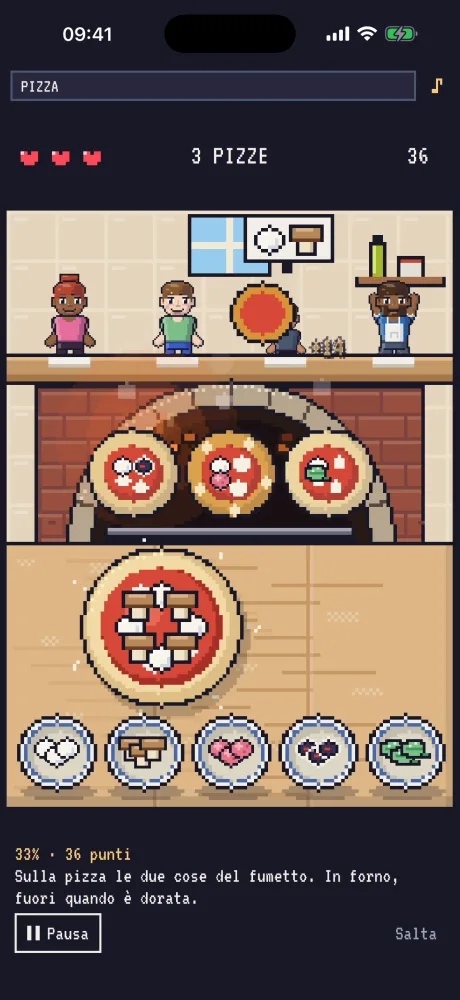
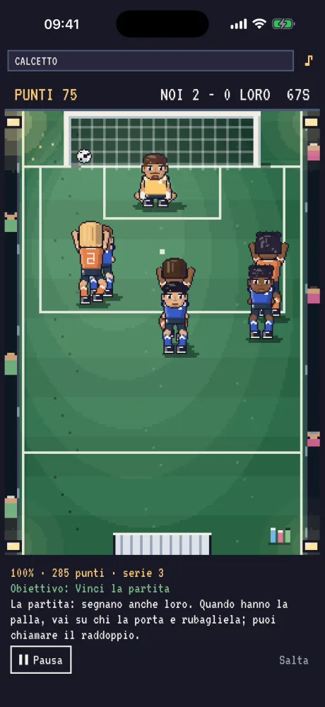
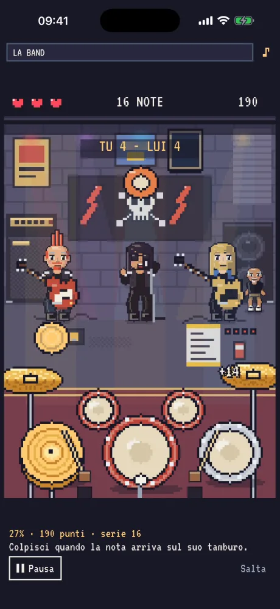
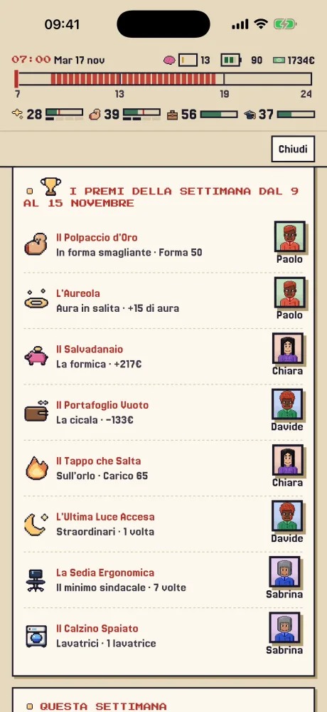
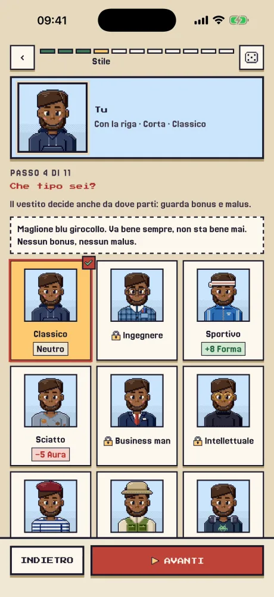

Il simulatore di mezza etàThe midlife sim, in pixel art
Mutuo, figli, padel, calcetto. La lavatrice da stendere e il gruppo della 5ªB che si è appena risvegliato. Vivi la fase della vita in cui tutto preme, e prova a non crollare.A mortgage, kids, padel, five-a-side. Laundry to hang out and a class group chat that just woke up. Live the stage of life when it all piles up, and try to keep it together.
- GratisFree
- Senza pubblicitàNo ads
- Senza accountNo account
- Game text in Italian
In arrivo su iPhone e AndroidComing to iPhone and Android
Una giornata alla voltaOne day at a time
Il gioco è il telefono del tuo personaggio: le app sono i luoghi, la batteria è l'energia, le notifiche sono gli eventi.The game is your character's phone: apps are places, the battery is your energy, notifications are events.
Ogni giorno va dalle 7 a mezzanotte e ogni cosa dura quello che dura: una corsetta 45 minuti, il lavoro fino a sera. Il tempo scorre sul calendario, con le feste al loro giorno, i bambini che crescono e gli anni che passano.Each day runs from 7 am to midnight and everything takes the time it takes: 45 minutes for a jog, work until evening. Time follows the calendar, with holidays on their dates, kids growing up and years going by.

Ogni scelta ha le sue conseguenzeEvery choice has its consequences
Giulia russa. Una gomitata gentile, il divano o un video come prova? Scegli per come sei o per come vorresti essere.Giulia snores. A gentle nudge, the sofa, or film it as evidence? Choose as who you are, or who you wish you were.
Le scelte rischiose mostrano la probabilità di riuscita. Le promesse diventano obiettivi, e quello che trascuri torna a trovarti. Ci si ammala, si litiga, si cambia lavoro.Risky choices show your odds. Promises become goals, and what you neglect comes back to find you. You get sick, you argue, you change jobs.

Ogni impegno è un minigiocoEvery task is a minigame
Il padel del giovedì, la chitarra al falò, la pizza per tutti, la band in cantina. Si gioca con un dito, e da come va dipende quanto ti rende. Se non hai voglia, si salta.Thursday padel, guitar by the bonfire, pizza for everyone, the band in the basement. Played with one finger, and how well it goes decides what you get out of it. Not in the mood? Skip it.





Entra in un clanJoin a clan
L'ufficio, il calcetto, i vecchi compagni: ognuno gioca la sua partita e la settimana si confronta. Il lunedì alle 6 arrivano i premi: il Polpaccio d'Oro, il Salvadanaio, il Calzino Spaiato.The office, five-a-side, old classmates: everyone plays their own game and you compare the week. Prizes come on Monday at 6 am: the Golden Calf, the Piggy Bank, the Odd Sock.
Si sfidano gli amici e si lanciano frecciatine già scritte. Si invita con un link o un QR. Non c'è chat, e chi non entra in un clan gioca come prima.Challenge friends and send ready-made jabs. Invite people with a link or a QR code. There is no chat, and clans are optional.

Chi seiWho you are
Età, famiglia, città, lavoro e passioni li decidi tu. Il ritratto in pixel art fa la faccia di come stai, e i vestiti che compri si vedono addosso.You decide age, family, city, job and passions. Your pixel-art portrait shows how you are doing, and the clothes you buy show up on you.
- 14 tipi, dall'ingegnere allo sciattotypes, from the engineer to the scruffy one
- 30 passionipassions
- 15 lavorijobs

Gratis, e Gold per chi vuoleFree, and Gold if you like
Gratis, sempreFree, forever
Una giornata di gioco al giorno, gli anni che passano, i clan e le scelte più comuni del personaggio. Nessuna pubblicità.One game day per real day, the passing years, clans and the most common character choices. No ads.
Anta GoldFortyish Gold
Si compra una volta. Apre le scelte con il lucchetto, la maratona (più giornate di fila), gli obiettivi lunghi e i grandi acquisti a rate. Nessun abbonamento.A one-time purchase. It opens the locked choices, marathon mode (more days in a row), the long goals and the big installment purchases. No subscription.
SupportoSupport
Domande, problemi o suggerimenti? Scrivici. Indica il modello del telefono, la versione del sistema e, se puoi, cosa stavi facendo quando è comparso il problema.Questions, problems or suggestions? Write to us. Include your phone model, system version and, if you can, what you were doing when the problem appeared.
Domande frequentiFrequently asked questions
Quanto dura una partita?How long does a game last?
Quanto vuoi: il tempo scorre senza fine e il bilancio lo fai tu dal Profilo. Ci si ferma prima solo con un tracollo, cioè due crolli nello stesso mese.As long as you like: time never stops, and you close the game yourself from the Profile. It ends earlier only with a full collapse: two breakdowns in the same month.
Perché devo aspettare la giornata nuova?Why do I have to wait for the next day?
Si parte con tre giornate. Poi ogni mattina alle 6 se ne sblocca una, e quelle non giocate si accumulano fino a tre. Con Gold c'è la maratona: più giornate di fila, senza aspettare.You start with three days. Then one unlocks every morning at 6, and unplayed days pile up to three. Gold adds marathon mode: more days in a row, no waiting.
Dov'è la mia partita?Where is my game saved?
Sul telefono. Se disinstalli l'app o ne cancelli i dati, la partita si perde, a meno che il backup del telefono (iCloud o Google) non la contenga.On your phone. If you uninstall the app or clear its data, the game is lost, unless your phone's backup (iCloud or Google) includes it.
Si gioca senza internet?Can I play offline?
Sì. La rete serve solo per i clan, gli inviti e gli acquisti.Yes. You only need a connection for clans, invites and purchases.
Ho comprato Gold e non lo vedo: che faccio?I bought Gold but I can't see it. What now?
Tocca «Ripristina acquisti» nel Profilo o nel foglio d'acquisto, con lo stesso account dello store. I rimborsi li gestiscono Apple e Google.Tap “Ripristina acquisti” (Restore purchases) in the Profile or in the purchase sheet, signed in to the same store account. Refunds are handled by Apple and Google.
Come entro in un clan?How do I join a clan?
Con il link, il QR o il codice di chi è già dentro. Puoi stare in cinque clan. Nell'app Clan puoi segnalare e bloccare.With a link, QR code or invite code from a member. You can be in up to five clans. You can report and block people in the Clan app.
Come cancello i miei dati dei clan?How do I delete my clan data?
Nell'app Clan, con «Cancella i miei dati dei clan», oppure scrivendoci. I dettagli sono nell'informativa sulla privacy.In the Clan app, with “Cancella i miei dati dei clan” (Delete my clan data), or by writing to us. Details are in the privacy policy.
Come condivido il finale?How do I share my ending?
Tocca Condividi il finale: il testo viene copiato e lo incolli dove vuoi.Tap Condividi il finale (Share the ending): the text is copied and you paste it wherever you like.
C'è in altre lingue?Is the game in English?
Per ora il gioco è solo in italiano.Not yet: for now the game text is in Italian only.